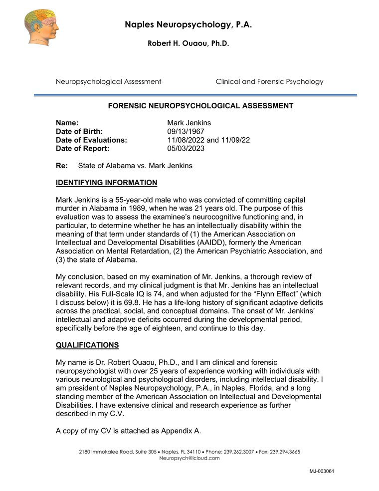
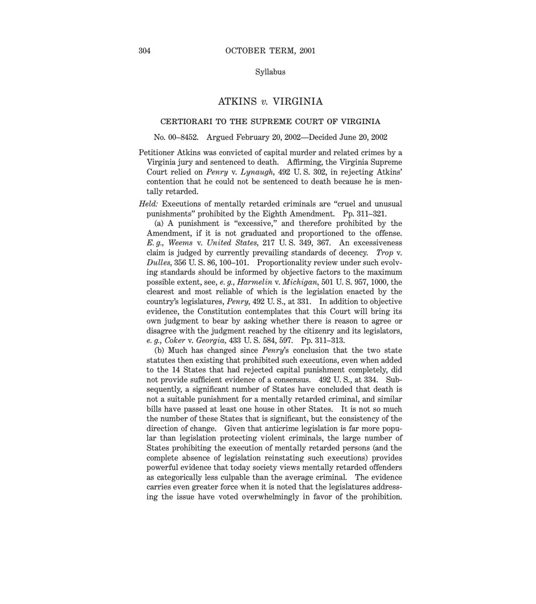

01. Intellectual disability
Mark Jenkins is on Alabama's death row even though he is intellectually disabled.
The U.S. Supreme Court has ruled that it is unconstitutional to execute an individual with intellectual disability. Governor Ivey must stop Alabama from doing so.
Mark is intellectually disabled and has been his entire life.
Even when Mark was a baby, his grandmother recognized that he seemed slow. He read at a third-grade level in fifth grade, and he stalled at that reading level well into his twenties. Throughout his life, he has been taken advantage of by others.
Based on extensive testing, a lengthy evaluation, voluminous records from Mark’s childhood, and more, neuropsychologist Robert Ouaou, Ph.D., diagnosed Mark with intellectual disability.

The diagnosis
A serious neurodevelopmental condition
Intellectual disability is a serious and lifelong neurodevelopmental condition marked by significant limitations in a person’s intellectual functioning and adaptive functioning. Someone with intellectual disability struggles to learn, process information, and handle everyday living skills.
Select a finding above to see the corresponding part of Dr. Ouaou’s report.
Robert H. Ouaou, Ph.D., Forensic Neuropsychological Assessment of Mark Jenkins, May 3, 2023.
Atkins v. Virginia
Protecting constitutional rights
In 2002, the U.S. Supreme Court ruled in Atkins v. Virginia that executing an intellectually disabled person violates the Eighth Amendment’s ban on cruel and unusual punishment.
Mark has been diagnosed as intellectually disabled by an expert and has been seeking an opportunity to prove his disability in court. To date, no court has given him the chance.
Governor Ivey is not bound by court rules. Even if courts refuse to hear Mark's evidence of intellectual disability, she can consider it and ensure that Alabama does not wrongfully execute an intellectually disabled man.
